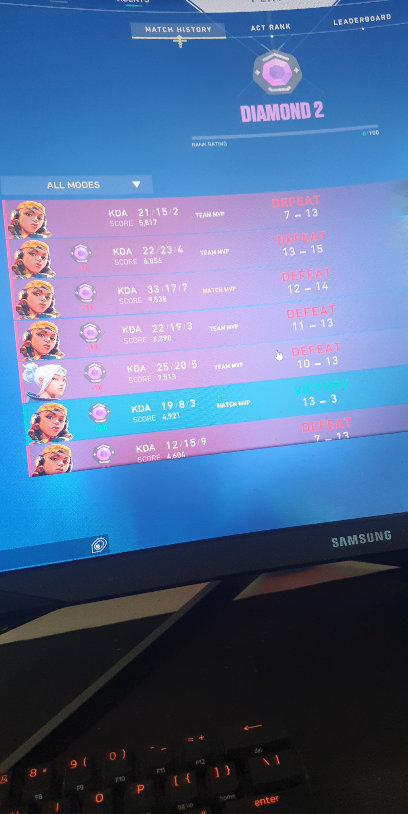

About Me
I'm a simple guy at the age of 27, located in Linköping
with my girlfriend and stepson.
I've always had a passion for tech and gaming
but also for making/listening to music, and of course my latest interest which is breaking new PB's in
the gym!
 (I
never give up!)
I've lived in this city for 11 years now
but in a near future i'm hoping to move to Norrköping for more culture and music
.
Life before Git
I didn't really have any prior knowledge of programming or version control systems.
I was introduced to Git on this hackaton in Värnamo and now I really don't recognize myself anymore.